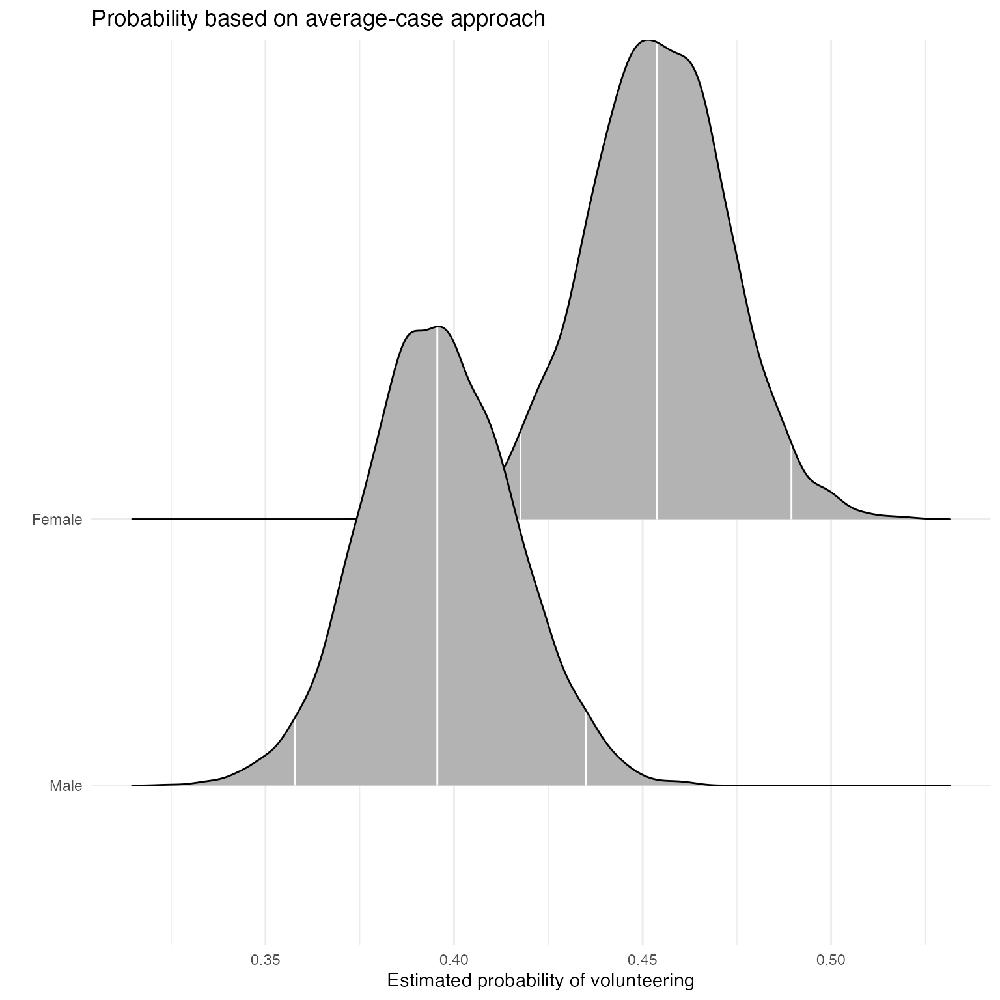
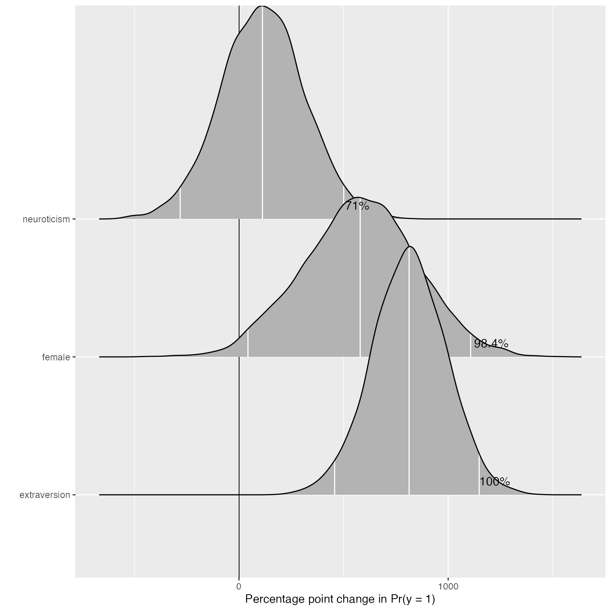
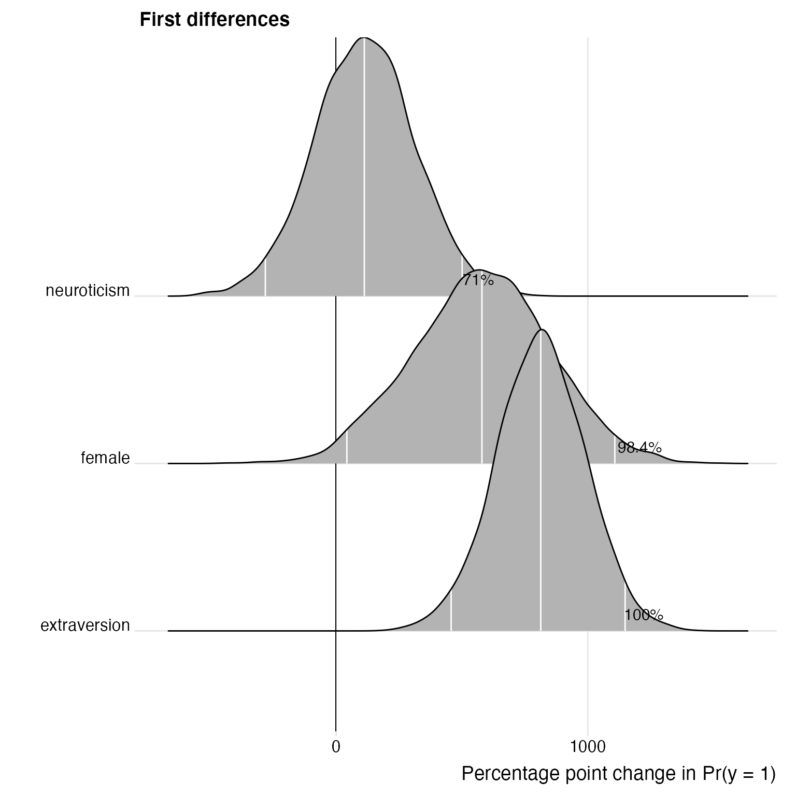

Using the BayesPostEst package
Johannes Karreth
Shana Scogin
Rob Williams
Andreas Beger
2020-06-12
Source:vignettes/getting_started.Rmd
getting_started.RmdIntroduction
BayesPostEst contains functions to generate postestimation quantities after estimating Bayesian regression models. The package was inspired by a set of functions written originally for Johannes Karreth’s workshop on Bayesian modeling at the ICPSR Summer program. It has grown to include new functions (see mcmcReg) and will continue to grow to support Bayesian postestimation. For now, the package focuses mostly on generalized linear regression models for binary outcomes (logistic and probit regression). More details on the package philosophy, its functions, and related packages can be found in Scogin et al. (2019).
Installation
To install the latest release on CRAN:
install.packages("BayesPostEst")
The latest development version on GitHub can be installed with:
library("devtools") install_github("ShanaScogin/BayesPostEst")
Once you have installed the package, you can access it by calling:
library("BayesPostEst")
After the package is loaded, check out the ?BayesPostEst to see a help file.
General setup
Most functions in this package work with posterior distributions of parameters. These distributions need to be converted into a matrix. All functions in the package do this automatically for posterior draws generated by JAGS, BUGS, MCMCpack, rstan, and rstanarm. For posterior draws generated by other tools, users must convert these objects into a matrix, where rows represent iterations and columns represent parameters.
Example data
This vignette uses the Cowles dataset (Cowles and Davis 1987) from the carData package (Fox, Weisberg, and Price 2018).
df <- carData::Cowles
This data frame contains information on 1421 individuals in the following variables:
- neuroticism: scale from Eysenck personality inventory.
- extraversion: scale from Eysenck personality inventory.
- sex: a factor with levels: female; male.
- volunteer: volunteering, a factor with levels: no; yes. This is the outcome variable for the running example in this vignette.
Before proceeding, we convert the two factor variables sex and volunteer into numeric variables. We also means-center and standardize the two continuous variables by dividing each by two standard deviations (Gelman and Hill 2007).
df$female <- (as.numeric(df$sex) - 2) * (-1) df$volunteer <- as.numeric(df$volunteer) - 1 df$extraversion <- (df$extraversion - mean(df$extraversion)) / (2 * sd(df$extraversion)) df$neuroticism <- (df$neuroticism - mean(df$neuroticism)) / (2 * sd(df$neuroticism))
We estimate a Bayesian generalized linear model with the inverse logit link function, where
\[ Pr(\text{Volunteering}_i) = \text{logit}^{-1}(\beta_1 + \beta_2 \text{Female}_i + \beta_3 \text{Neuroticism}_i + \beta_4 \text{Extraversion}_i) \]
BayesPostEst functions accommodate GLM estimates for both logit and probit link functions. The examples proceed with the logit link function. If we had estimated a probit regression, the corresponding argument link in relevant function calls would need to be set to link = "probit". Otherwise, it is set to link = "logit" by default.
Model estimation
To use BayesPostEst, we first estimate a Bayesian regression model. This vignette demonstrates five tools for doing so: JAGS (via the R2jags and rjags packages), MCMCpack, and the two Stan interfaces rstan and rstanarm.
JAGS
First, we prepare the data for JAGS (Plummer 2017). Users need to combine all variables into a list and specify any other elements, like in this case N, the number of observations.
We then write the JAGS model into the working directory.
mod.jags <- paste(" model { for (i in 1:N){ volunteer[i] ~ dbern(p[i]) logit(p[i]) <- mu[i] mu[i] <- b[1] + b[2] * female[i] + b[3] * neuroticism[i] + b[4] * extraversion[i] } for(j in 1:4){ b[j] ~ dnorm(0, 0.1) } } ") writeLines(mod.jags, "mod.jags")
We then define the parameters for which we wish to retain posterior distributions and provide starting values.
params.jags <- c("b") inits1.jags <- list("b" = rep(0, 4)) inits.jags <- list(inits1.jags, inits1.jags, inits1.jags, inits1.jags)
Now, fit the model using the R2jags package.
library("R2jags") set.seed(123) fit.jags <- jags(data = dl, inits = inits.jags, parameters.to.save = params.jags, n.chains = 4, n.iter = 2000, n.burnin = 1000, model.file = "mod.jags") #> Compiling model graph #> Resolving undeclared variables #> Allocating nodes #> Graph information: #> Observed stochastic nodes: 1421 #> Unobserved stochastic nodes: 4 #> Total graph size: 6864 #> #> Initializing model
The same data and model can be used to fit the model using the rjags package:
library("rjags") mod.rjags <- jags.model(file = "mod.jags", data = dl, inits = inits.jags, n.chains = 4, n.adapt = 1000) #> Compiling model graph #> Resolving undeclared variables #> Allocating nodes #> Graph information: #> Observed stochastic nodes: 1421 #> Unobserved stochastic nodes: 4 #> Total graph size: 6864 #> #> Initializing model fit.rjags <- coda.samples(model = mod.rjags, variable.names = params.jags, n.iter = 2000)
RStan
We write the same model in Stan language.
mod.stan <- paste(" data { int<lower=0> N; int<lower=0,upper=1> volunteer[N]; vector[N] female; vector[N] neuroticism; vector[N] extraversion; } parameters { vector[4] b; } model { volunteer ~ bernoulli_logit(b[1] + b[2] * female + b[3] * neuroticism + b[4] * extraversion); for(i in 1:4){ b[i] ~ normal(0, 3); } } ") writeLines(mod.stan, "mod.stan")
We then load rstan (Stan Development Team 2019)…
library("rstan") rstan_options(auto_write = TRUE) options(mc.cores = 2)
… and estimate the model, re-using the data in list format created for JAGS earlier.
Tables of regression coefficients and other parameters
BayesPostEst contains functions to generate regression tables from objects created by the following packages: R2jags, runjags, rjags, R2WinBUGS, MCMCpack, rstan, rstanarm, and brms. This includes the following object classes: jags, rjags, bugs, mcmc, mcmc.list, stanreg, stanfit, brmsfit. The package contains two different functions to produce regression tables:
mcmcTabmcmcReg
Each has its own advantages which we discuss in depth below.
Bayesian regression tables
mcmcTab generates a table summarizing the posterior distributions of all parameters contained in the model object. This table can then be used to summarize parameter quantities. By default, mcmcTab generates a dataframe with one row per parameter and columns containing the median, standard deviation, and 95% credible interval of each parameter’s posterior distribution.
mcmcTab(fit.jags) #> Variable Median SD Lower Upper #> 1 b[1] -0.462 0.082 -0.622 -0.298 #> 2 b[2] 0.238 0.112 0.017 0.455 #> 3 b[3] 0.063 0.113 -0.158 0.283 #> 4 b[4] 0.515 0.112 0.291 0.729 #> 5 deviance 1909.455 2.875 1906.574 1917.541
mcmcTab(fit.rjags) #> Variable Median SD Lower Upper #> 1 b[1] -0.460 0.082 -0.621 -0.301 #> 2 b[2] 0.237 0.111 0.017 0.456 #> 3 b[3] 0.060 0.111 -0.153 0.284 #> 4 b[4] 0.519 0.110 0.299 0.736
mcmcTab(fit.MCMCpack) #> Variable Median SD Lower Upper #> 1 (Intercept) -0.463 0.083 -0.612 -0.304 #> 2 female 0.231 0.110 0.016 0.435 #> 3 neuroticism 0.058 0.112 -0.147 0.321 #> 4 extraversion 0.509 0.102 0.320 0.718
mcmcTab(fit.stan) #> Variable Median SD Lower Upper #> 1 b[1] -0.461 0.083 -0.627 -0.300 #> 2 b[2] 0.238 0.111 0.019 0.456 #> 3 b[3] 0.062 0.112 -0.161 0.273 #> 4 b[4] 0.516 0.112 0.306 0.737 #> 5 lp__ -954.723 1.413 -958.589 -953.290
mcmcTab(fit.rstanarm) #> Variable Median SD Lower Upper #> 1 (Intercept) -0.463 0.082 -0.619 -0.303 #> 2 female 0.237 0.115 0.006 0.460 #> 3 neuroticism 0.061 0.113 -0.158 0.282 #> 4 extraversion 0.525 0.113 0.301 0.741
Proportion of positive/negative draws
Users can add a column to the table that calculates the percent of posterior draws that have the same sign as the median of the posterior distribution.
mcmcTab(fit.jags, Pr = TRUE) #> Variable Median SD Lower Upper Pr #> 1 b[1] -0.462 0.082 -0.622 -0.298 1.000 #> 2 b[2] 0.238 0.112 0.017 0.455 0.984 #> 3 b[3] 0.063 0.113 -0.158 0.283 0.712 #> 4 b[4] 0.515 0.112 0.291 0.729 1.000 #> 5 deviance 1909.455 2.875 1906.574 1917.541 1.000
ROPE
Users can also define a “region of practical equivalence” (ROPE; Kruschke (2013); Kruschke (2018)). This region is a band of values around 0 that are “practically equivalent” to 0 or no effect. For this to be useful, all parameters (e.g. regression coefficients) must be on the same scale because mcmcTab accepts only one definition of ROPE for all parameters. Users can standardize regression coefficients to achieve this. Because we standardized variables earlier, the coefficients (except the intercept) are on a similar scale and we define the ROPE to be between -0.1 and 0.1.
Conventional regression tables
The mcmcReg function serves as an interface to texreg and produces more polished and publication-ready tables than mcmcTab. mcmcReg writes tables in HTML or LaTeX format. mcmcReg can produce tables with multiple models with each model in a column and supports flexible renaming of parameters. However, these tables are more similar to standard frequentist regression tables, so they do not have a way to incorporate the percent of posterior draws that have the same sign as the median of the posterior distribution or a ROPE like mcmcTab is able to. Uncertainty intervals can be either standard credible intervals or highest posterior density intervals (Kruschke 2015) using the hpdi argument, and their level can be set with the ci argument (default 95%). Separately calculated goodness of fit statistics can be included with the gof argument.
mcmcReg(fit.jags, format = 'html', doctype = F)
| Model 1 | |
|---|---|
| b[1] | -0.46* |
| [ -0.62; -0.30] | |
| b[2] | 0.24* |
| [ 0.02; 0.46] | |
| b[3] | 0.06 |
| [ -0.16; 0.28] | |
| b[4] | 0.51* |
| [ 0.29; 0.73] | |
| deviance | 1910.11* |
| [1906.57; 1917.54] | |
| * 0 outside 95% credible interval. | |
Limiting output
mcmcReg supports limiting the parameters included in the table via the pars argument. By default, all parameters saved in the model object will be included. In the case of fit.jags, this include the deviance estimate. If we wish to exclude it, we can specify pars = 'b' which will capture b[1]-b[4] using regular expression matching.
mcmcReg(fit.jags, pars = 'b', format = 'html', regex = T, doctype = F)
| Model 1 | |
|---|---|
| b[1] | -0.46* |
| [-0.62; -0.30] | |
| b[2] | 0.24* |
| [ 0.02; 0.46] | |
| b[3] | 0.06 |
| [-0.16; 0.28] | |
| b[4] | 0.51* |
| [ 0.29; 0.73] | |
| * 0 outside 95% credible interval. | |
If we only wish to exclude the intercept, we can do this by explicitly specifying the parameters we wish to include as a vector. Note that in this example we have to escape the []s in pars because they are a reserved character in regular expressions.
mcmcReg(fit.jags, pars = c('b\\[1\\]', 'b\\[3\\]', 'b\\[4\\]'), format = 'html', regex = T, doctype = F)
| Model 1 | |
|---|---|
| b[1] | -0.46* |
| [-0.62; -0.30] | |
| b[3] | 0.06 |
| [-0.16; 0.28] | |
| b[4] | 0.51* |
| [ 0.29; 0.73] | |
| * 0 outside 95% credible interval. | |
mcmcReg also supports partial regular expression matching of multiple parameter family names as demonstrated below.
| Model 1 | |
|---|---|
| b[1] | -0.46* |
| [ -0.62; -0.30] | |
| b[2] | 0.24* |
| [ 0.02; 0.46] | |
| b[3] | 0.06 |
| [ -0.16; 0.28] | |
| b[4] | 0.51* |
| [ 0.29; 0.73] | |
| deviance | 1910.11* |
| [1906.57; 1917.54] | |
| * 0 outside 95% credible interval. | |
Custom coefficient names
mcmcReg supports custom coefficient names to support publication-ready tables. The simplest option is via the coefnames argument. Note that the number of parameters and the number of custom coefficient names must match, so it is a good idea to use pars in tandem with coefnames.
mcmcReg(fit.jags, pars = 'b', coefnames = c('(Constant)', 'Female', 'Neuroticism', 'Extraversion'), format = 'html', regex = T, doctype = F)
| Model 1 | |
|---|---|
| (Constant) | -0.46* |
| [-0.62; -0.30] | |
| Female | 0.24* |
| [ 0.02; 0.46] | |
| Neuroticism | 0.06 |
| [-0.16; 0.28] | |
| Extraversion | 0.51* |
| [ 0.29; 0.73] | |
| * 0 outside 95% credible interval. | |
A more flexible way to include custom coefficient names is via the custom.coef.map argument, which accepts a named list, with names as parameter names in the model and values as the custom coefficient names.
mcmcReg(fit.jags, pars = 'b', custom.coef.map = list('b[1]' = '(Constant)', 'b[2]' = 'Female', 'b[3]' = 'Nueroticism', 'b[4]' = 'Extraversion'), format = 'html', regex = T, doctype = F)
| Model 1 | |
|---|---|
| (Constant) | -0.46* |
| [-0.62; -0.30] | |
| Female | 0.24* |
| [ 0.02; 0.46] | |
| Nueroticism | 0.06 |
| [-0.16; 0.28] | |
| Extraversion | 0.51* |
| [ 0.29; 0.73] | |
| * 0 outside 95% credible interval. | |
The advantage of custom.coef.map is that it can flexibly reorder and omit coefficients from the table based on their positions within the list. Notice in the code below that deviance does not have to be included in pars because its absence from custom.coef.map omits it from the resulting table.
mcmcReg(fit.jags, custom.coef.map = list('b[2]' = 'Female', 'b[4]' = 'Extraversion', 'b[1]' = '(Constant)'), format = 'html', doctype = F)
| Model 1 | |
|---|---|
| Female | 0.24* |
| [ 0.02; 0.46] | |
| Extraversion | 0.51* |
| [ 0.29; 0.73] | |
| (Constant) | -0.46* |
| [-0.62; -0.30] | |
| * 0 outside 95% credible interval. | |
However, it is important to remember that mcmcReg will look for the parameter names in the model object, so be sure to inspect it for the correct parameter names. This is important because stan_glm will produce a model object with variable names instead of indexed parameter names.
Multiple models
mcmcReg accepts multiple model objects and will produce a table with one model per column. To produce a table from multiple models, pass a list of models as the mod argument to mcmcReg.
| Model 1 | Model 2 | |
|---|---|---|
| b[1] | -0.46* | -0.46* |
| [ -0.63; -0.30] | [ -0.63; -0.30] | |
| b[2] | 0.24* | 0.24* |
| [ 0.02; 0.46] | [ 0.02; 0.46] | |
| b[3] | 0.06 | 0.06 |
| [ -0.16; 0.27] | [ -0.16; 0.27] | |
| b[4] | 0.52* | 0.52* |
| [ 0.31; 0.74] | [ 0.31; 0.74] | |
| lp__ | -955.07* | -955.07* |
| [-958.59; -953.29] | [-958.59; -953.29] | |
| * Null hypothesis value outside 95% credible interval. | ||
Note, however, that all model objects must be of the same class, so it is not possible to generate a table from a jags object and a stanfit object.
mcmcReg(list(fit.jags, fit.stan), format = 'html', doctype = F) #> Error in mcmcReg(list(fit.jags, fit.stan), format = "html", doctype = F): More than one object class supplied to argument "mod"
When including multiple models, supplying scalars or vectors to arguments will result in them being applied to each model equally. Treating models differentially is possible by supplying a list of scalars or vectors instead.
mcmcReg(list(fit.rstanarm, fit.rstanarm), pars = list(c('female', 'extraversion'), 'neuroticism'), format = 'html', doctype = F)
| Model 1 | Model 2 | |
|---|---|---|
| female | 0.24* | |
| [0.01; 0.46] | ||
| extraversion | 0.52* | |
| [0.30; 0.74] | ||
| neuroticism | 0.06 | |
| [-0.16; 0.28] | ||
| * Null hypothesis value outside 95% credible interval. | ||
texreg arguments
Although custom.coef.map is not an argument to mcmcReg, it works because mcmcReg supports all standard texreg arguments (a few have been overridden, but they are explicit arguments to mcmcReg). This introduces a high level of control over the output of mcmcReg, as e.g. models can be renamed.
mcmcReg(fit.rstanarm, custom.model.names = 'Binary Outcome', format = 'html', doctype = F)
| Binary Outcome | |
|---|---|
| (Intercept) | -0.46* |
| [-0.62; -0.30] | |
| female | 0.24* |
| [ 0.01; 0.46] | |
| neuroticism | 0.06 |
| [-0.16; 0.28] | |
| extraversion | 0.52* |
| [ 0.30; 0.74] | |
| * 0 outside 95% credible interval. | |
Predicted probabilities
mcmcAveProb
To evaluate the relationship between covariates and a binary outcome, this function calculates the predicted probability (\(Pr(y = 1)\)) at pre-defined values of one covariate of interest (\(x\)), while all other covariates are held at a “typical” value. This follows suggestions outlined in King, Tomz, and Wittenberg (2000) and elsewhere, which are commonly adopted by users of GLMs. The mcmcAveProb function by default calculates the median value of all covariates other than \(x\) as “typical” values.
Before moving on, we show how create a matrix of posterior draws of coefficients to pass onto these functions. Eventually, each function will contain code similar to the first section of mcmcTab to do this as part of the function.
mcmcmat.jags <- as.matrix(coda::as.mcmc(fit.jags)) mcmcmat.MCMCpack <- as.matrix(fit.MCMCpack) mcmcmat.stan <- as.matrix(fit.stan) mcmcmat.rstanarm <- as.matrix(fit.rstanarm)
Next, we generate the model matrix to pass on to the function. A model matrix contains as many columns as estimated regression coefficients. The first column is a vector of 1s (corresponding to the intercept); the remaining columns are the observed values of covariates in the model. Note: the order of columns in the model matrix must correspond to the order of columns in the matrix of posterior draws.
mm <- model.matrix(volunteer ~ female + neuroticism + extraversion, data = df)
We can now generate predicted probabilities for different values of a covariate of interest.
Sex
First, we generate full posterior distributions of the predicted probability of volunteering for a typical female and a typical male. In this function and mcmcObsProb, users specify the range of \(x\) (here 0 and 1) as well as the number of the column of \(x\) in the matrix of posterior draws as well as the model matrix.
aveprob.female.jags <- mcmcAveProb(modelmatrix = mm, mcmcout = mcmcmat.jags[, 1:ncol(mm)], xcol = 2, xrange = c(0, 1), link = "logit", ci = c(0.025, 0.975), fullsims = TRUE)
Users can then visualize this posterior distribution using the ggplot2 and ggridges packages.
library("ggplot2") library("ggridges") ggplot(data = aveprob.female.jags, aes(y = factor(x), x = pp)) + stat_density_ridges(quantile_lines = TRUE, quantiles = c(0.025, 0.5, 0.975), vline_color = "white") + scale_y_discrete(labels = c("Male", "Female")) + ylab("") + xlab("Estimated probability of volunteering") + labs(title = "Probability based on average-case approach")

Extraversion
For continuous variables of interest, users may want to set fullsims = FALSE to obtain the median predicted probability along the range of \(x\) as well as a lower and upper bound of choice (here, the 95% credible interval).
aveprob.extra.jags <- mcmcAveProb(modelmatrix = mm, mcmcout = mcmcmat.jags[, 1:ncol(mm)], xcol = 4, xrange = seq(min(df$extraversion), max(df$extraversion), length.out = 20), link = "logit", ci = c(0.025, 0.975), fullsims = FALSE)
Users can then plot the resulting probabilities using any plotting functions, such as ggplot2.
ggplot(data = aveprob.extra.jags, aes(x = x, y = median_pp)) + geom_ribbon(aes(ymin = lower_pp, ymax = upper_pp), fill = "gray") + geom_line() + xlab("Extraversion") + ylab("Estimated probability of volunteering") + ylim(0, 1) + labs(title = "Probability based on average-case approach")

mcmcObsProb
As an alternative to probabilities for “typical” cases, Hanmer and Kalkan (2013) suggest to calculate predicted probabilities for all observed cases and then derive an “average effect”. In their words, the goal of this postestimation “is to obtain an estimate of the average effect in the population … rather than seeking to understand the effect for the average case.”
Sex
We first calculate the average “effect” of sex on volunteering, again generating a full posterior distribution. Again, xcol represents the position of the covariate of interest, and xrange specifies the values for which \(Pr(y = 1)\) is to be calculated.
obsprob.female.jags <- mcmcObsProb(modelmatrix = mm, mcmcout = mcmcmat.jags[, 1:ncol(mm)], xcol = 2, xrange = c(0, 1), link = "logit", ci = c(0.025, 0.975), fullsims = TRUE)
Users can again plot the resulting densities.
ggplot(data = obsprob.female.jags, aes(y = factor(x), x = pp)) + stat_density_ridges(quantile_lines = TRUE, quantiles = c(0.025, 0.5, 0.975), vline_color = "white") + scale_y_discrete(labels = c("Male", "Female")) + ylab("") + xlab("Estimated probability of volunteering") + labs(title = "Probability based on observed-case approach")

Extraversion
For this continuous predictor, we use fullsims = FALSE.
obsprob.extra.jags <- mcmcObsProb(modelmatrix = mm, mcmcout = mcmcmat.jags[, 1:ncol(mm)], xcol = 4, xrange = seq(min(df$extraversion), max(df$extraversion), length.out = 20), link = "logit", ci = c(0.025, 0.975), fullsims = FALSE)
We then plot the resulting probabilities across observed cases.
ggplot(data = obsprob.extra.jags, aes(x = x, y = median_pp)) + geom_ribbon(aes(ymin = lower_pp, ymax = upper_pp), fill = "gray") + geom_line() + xlab("Extraversion") + ylab("Estimated probability of volunteering") + ylim(0, 1) + labs(title = "Probability based on observed-case approach")

First differences
mcmcFD
To summarize typical effects across covariates, we generate “first differences” (Long (1997), King, Tomz, and Wittenberg (2000)). This quantity represents, for each covariate, the difference in predicted probabilities for cases with low and high values of the respective covariate. For each of these differences, all other variables are held constant at their median.
fdfull.jags <- mcmcFD(modelmatrix = mm, mcmcout = mcmcmat.jags[, 1:ncol(mm)], link = "logit", ci = c(0.025, 0.975), fullsims = TRUE) summary(fdfull.jags) #> female neuroticism extraversion #> Min. :-0.04432 Min. :-0.055522 Min. :0.01957 #> 1st Qu.: 0.03972 1st Qu.:-0.002247 1st Qu.:0.06957 #> Median : 0.05795 Median : 0.011224 Median :0.08132 #> Mean : 0.05779 Mean : 0.011263 Mean :0.08124 #> 3rd Qu.: 0.07619 3rd Qu.: 0.024511 3rd Qu.:0.09313 #> Max. : 0.15245 Max. : 0.080707 Max. :0.14269
The posterior distribution can be summarized as above, or users can directly obtain a summary when setting fullsims to FALSE.
fdsum.jags <- mcmcFD(modelmatrix = mm, mcmcout = mcmcmat.jags[, 1:ncol(mm)], link = "logit", ci = c(0.025, 0.975), fullsims = FALSE) fdsum.jags #> median_fd lower_fd upper_fd VarName VarID #> female 0.05794760 0.004299115 0.11073472 female 1 #> neuroticism 0.01122442 -0.028097810 0.05008092 neuroticism 2 #> extraversion 0.08132383 0.045716391 0.11482003 extraversion 3
Users can plot the median and credible intervals of the summary of the first differences.
ggplot(data = fdsum.jags, aes(x = median_fd, y = VarName)) + geom_point() + geom_segment(aes(x = lower_fd, xend = upper_fd, yend = VarName)) + geom_vline(xintercept = 0) + xlab("Change in Pr(Volunteering)") + ylab("")

mcmcFDplot
To make use of the full posterior distribution of first differences, we provide a dedicated plotting function. mcmcFDplot returns a ggplot2 object that can be further customized. The function is modeled after Figure 1 in Karreth (2018). Users can specify a region of practical equivalence and print the percent of posterior draws to the right or left of the ROPE. If ROPE is not specified, the figure automatically prints the percent of posterior draws to the left or right of 0.
mcmcFDplot(fdfull = fdfull.jags, ROPE = c(-0.01, 0.01))

The user can further customize the plot.
p <- mcmcFDplot(fdfull = fdfull.jags, ROPE = c(-0.01, 0.01)) p + labs(title = "First differences") + ggridges::theme_ridges()

Model fit
mcmcRocPrc
One way to assess model fit is to calculate the area under the Receiver Operating Characteristic (ROC) and Precision-Recall curves. A short description of these curves and their utility for model assessment is provided in Beger (2016). The mcmcRocPrc function produces an object with four elements: the area under the ROC curve, the area under the PR curve, and two dataframes to plot each curve. When fullsims is set to FALSE, the elements represent the median of the posterior distribution of each quantity.
mcmcRocPrc currently requires an “rjags” object (a model fitted in R2jags) as input. Future package versions will generalize this input to allow for model objects fit with any of the other packages used in BayesPostEst.
fitstats <- mcmcRocPrc(object = fit.jags, yname = "volunteer", xnames = c("female", "neuroticism", "extraversion"), curves = TRUE, fullsims = FALSE)
Users can then print the area under the each curve:
fitstats$area_under_roc #> V1 #> 0.5840611
fitstats$area_under_prc #> V1 #> 0.4867844
Users can also plot the ROC curve…
ggplot(data = fitstats$roc_dat, aes(x = x, y = y)) + geom_line() + geom_abline(intercept = 0, slope = 1, color = "gray") + labs(title = "ROC curve") + xlab("1 - Specificity") + ylab("Sensitivity")

… as well as the precision-recall curve.
ggplot(data = fitstats$prc_dat, aes(x = x, y = y)) + geom_line() + labs(title = "Precision-Recall curve") + xlab("Recall") + ylab("Precision")

To plot the posterior distribution of the area under the curves, users set the fullsims argument to TRUE. Unless a user wishes to plot credible intervals around the ROC and PR curves themselves, we recommend keeping curves at FALSE to avoid long computation time.
fitstats.fullsims <- mcmcRocPrc(object = fit.jags, yname = "volunteer", xnames = c("female", "neuroticism", "extraversion"), curves = FALSE, fullsims = TRUE)
We can then plot the posterior density of the area under each curve.
ggplot(fitstats.fullsims, aes(x = area_under_roc)) + geom_density() + labs(title = "Area under the ROC curve")

ggplot(fitstats.fullsims, aes(x = area_under_prc)) + geom_density() + labs(title = "Area under the Precision-Recall curve")

References
Beger, Andreas. 2016. “Precision-Recall Curves.” Available at SSRN: Https://Ssrn.com/Abstract=2765419. http://dx.doi.org/10.2139/ssrn.2765419.
Cowles, Michael, and Caroline Davis. 1987. “The Subject Matter of Psychology: Volunteers.” British Journal of Social Psychology 26 (2): 97–102. https://doi.org/10.1111/j.2044-8309.1987.tb00769.x.
Fox, John, Sanford Weisberg, and Brad Price. 2018. CarData: Companion to Applied Regression Data Sets. https://CRAN.R-project.org/package=carData.
Gelman, Andrew, and Jennifer Hill. 2007. Data Analysis Using Regression and Multilevel/Hierarchical Models. New York, NY: Cambridge University Press.
Goodrich, Ben, Jonah Gabry, Imad Ali, and Sam Brilleman. 2019. Rstanarm: Bayesian Applied Regression Modeling via Stan. http://mc-stan.org/.
Hanmer, Michael J., and Kerem Ozan Kalkan. 2013. “Behind the Curve: Clarifying the Best Approach to Calculating Predicted Probabilities and Marginal Effects from Limited Dependent Variable Models.” American Journal of Political Science 57 (1): 263–77. https://doi.org/10.1111/j.1540-5907.2012.00602.x.
Karreth, Johannes. 2018. “The Economic Leverage of International Organizations in Interstate Disputes.” International Interactions 44 (3): 463–90. https://doi.org/10.1080/03050629.2018.1389728.
King, Gary, Michael Tomz, and Jason Wittenberg. 2000. “Making the Most of Statistical Analyses: Improving Interpretation and Presentation.” American Journal of Political Science 44 (2): 347–61. http://www.jstor.org/stable/2669316.
Kruschke, John. 2015. Doing Bayesian Data Analysis: A Tutorial with R, JAGS, and Stan. 2nd Edition. Amsterdam : Academic Press, 2015.
Kruschke, John K. 2013. “Bayesian Estimation Supersedes the T-Test.” Journal of Experimental Psychology: General 142 (2): 573–603. https://doi.org/10.1037/a0029146.
———. 2018. “Rejecting or Accepting Parameter Values in Bayesian Estimation.” Advances in Methods and Practices in Psychological Science 1 (2): 270–80. https://doi.org/10.1177/2515245918771304.
Long, J. Scott. 1997. Regression Models for Categorial and Limited Dependent Variables. Thousand Oaks: Sage Publications.
Martin, Andrew D., Kevin M. Quinn, and Jong Hee Park. 2011. “MCMCpack: Markov Chain Monte Carlo in R.” Journal of Statistical Software 42 (9): 22. http://www.jstatsoft.org/v42/i09/.
Plummer, Martyn. 2017. “JAGS Version 4.3.0 User Manual.” http://mcmc-jags.sourceforge.net.
Scogin, Shana, Johannes Karreth, Andreas Beger, and Rob Williams. 2019. “BayesPostEst: An R Package to Generate Postestimation Quantities for Bayesian MCMC Estimation.” Journal of Open Source Software 4 (42): 1722. https://doi.org/10.21105/joss.01722.
Stan Development Team. 2019. RStan: The R Interface to Stan. http://mc-stan.org/.